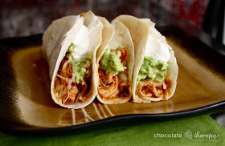

3-Ingredient Crockpot Chicken Tacos
Back to Odin Recipe Page
Description
Three ingredients and almost zero work. If there is one crockpot recipe you need in your repertoire, this is it. But truthfully, after making it once you won't even need the recipe because it's just so darn easy.

Credits
Recipe from Tasty Kitchen. Image from mychocolatetherapy.com
Ingredients
- 1 1oz Envelope Taco Seasoning (Old El Paso Reduced Sodium)
- 6 Boneless, Skinless Chicken Breasts, thawed
- 1 16oz jar Salsa (Newman's Own, Pace)
Cooking Instructions
- Dump all ingredients into a crockpot and give it a little stir to blend the seasoning with the salsa. You do not need to add any water to the taco seasoning. Cook on high for 4 to 6 hours or on low for 6 to 8 hours. When done, the chicken should shred easily when stirred with a fork.
- For tacos, serve the chicken with soft flour tortillas, guacamole, lettuce, shredded cheese and/or sour cream. This is very versatile and can be used for enchiladas, nachos, tostadas, quesadillas, etc. Any leftover chicken can then be used for tortilla soup (make it the next day or freeze the chicken to use at a later time).